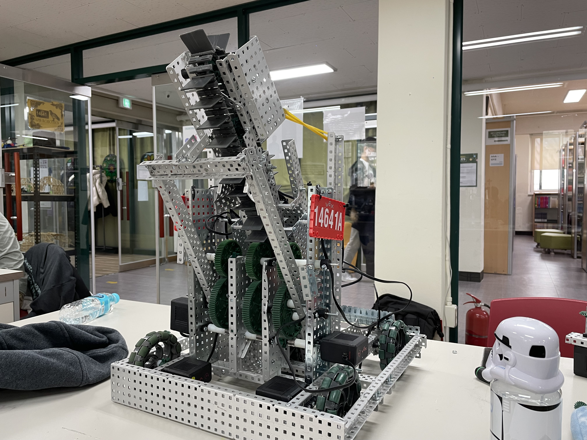
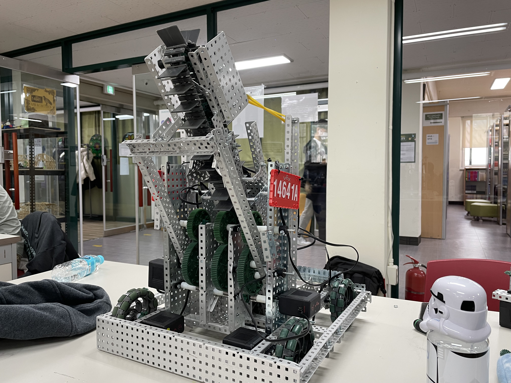

International Robot Olympiad

Mission Challenge is a category which conducts robot creatively to execute a mission provided on the day. Participants are evaluated with the ability to solve problems by applying scientific knowledge and robot technology since the game is played in a limited situation without settled platform
1st place(2022), 2nd place in Korea round(2021), 1st place in the International round(2021)

AI soccer is an E-SPORTS soccer game in which participating teams program team strategies and tactics using AI technology. After coding, strategic algorithm implementation is required because it is controlled by a program without human intervention.
2 times 1st place in Korea round(2021-2022), 1st place in the International round(2021)
Energy Saving is a game that aims the robot to finish the course as fast as possible using solar energy. Only solar energy and condenser is allowed as a power, and since diverse courses (curved, straight, slope courses) are asked to be driven, understandings of structure of robot and physical knowledge is needed.

2nd place in Korea round, 4th place in the International round
Soft Robotics Research

In conventional robotics, the technological research focuses on strength and functionality of robots. Recently, out of these perspective, soft robot, which is new shape of robots inspired from biological systems attracts intensive interest in fields of robotics. Inspired from nature, we could improve the mechanical properties of conventional robots and impart new kinds of biological functions to robots. Many innovative strategies have been developed in recent years to design soft components and systems that realizes natural actuations of bioinspired robot. Soft robots consist of soft materials and are actuated by various kinds of mechanical principles. There are several advantages of soft robots compared to the conventional robots; safe human-machine interactions, adaptive conformability to wearable devices, useful biological properties from organism etc. Due to the unique features and advantages, soft robots have a considerable range of applications. The purpose of this study is investigation of state of art technologies regarding mechanical and material aspects of soft robots. This review was written in three fundamental sections: i) Materials for soft robotics, ii) fundamental mechanics of soft materials and, iii) mechanical principles of actuation. The promising soft materials can be categorized simply in four types according to softness and functions: hydrogel, elastomer, shape memory polymer and self-healing polymer. These materials have softness and deformation freedom, which has potential to provide natural movements of robot enabling imitation of biological movements. To analyze it in scientific method, we investigate the several mechanical standards and principles of robot actuation in mechanical aspects. In the future, all robots would evolve closer to biological lives.
Published in International Journal of Science Academic Research
Vex Robotics
School VEX leader and coder for 4 years. Qualified for VEX Worlds in 2020&2023. Current VEX IQ coach
VEX Tournament Champions of 2023 Korea National Competition
 

USA Computing Olympiad
Participants of the USA Computing Olympiad start from the Bronze division; by solving three questions dedicated to the division, one can move up a division. Out of 9,933 participants, only 774 were able to get to the Gold division for the past year.By utilizing online training resources like codeforces or past USACO problems, I was able to grasp a variety of tactics to solve algorithmic problems. Through constant 2 hour practices for three months, I was able to rank 138th place out of 774 pre-college participants that were competing in the Gold division.